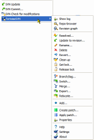
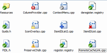
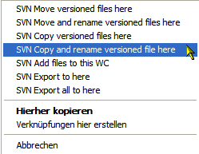

Features
$ADSENSE_TOP$TortoiseSVN is a really easy to use Revision control / version control / source control software for Windows. It is based on Subversion. TortoiseSVN provides a nice and easy user interface for Subversion.
It is developed under the GPL. Which means it is completely free, including the source code. But just in case you don't know the GPL too well: you can use TortoiseSVN to develop commercial applications or just use it in your company without any restrictions.
Since it's not an integration for a specific IDE like Visual Studio, Eclipse or others, you can use it with whatever development tools you like.
As a Subversion client, TortoiseSVN has all the features of Subversion itself, including:
- Most current CVS features.
- Directories, renames, and file meta-data are versioned.
- Commits are truly atomic.
- Branching and tagging are cheap (constant time) operations.
- Efficient handling of binary files.
Since TortoiseSVN is a Windows shell extension, it integrates in the file explorer. That means you can use it with the tool you are most familiar with.
- all commands are available directly from the
windows explorer.You can choose which entries
TortoiseSVN should show in the top context menu and
which it should put in the submenu.
only commands that make sense for the selected file/folder are shown. You won't see any commands that you can't use in your situation.
$ADSENSE_INPAGE$
- See the status of your files directly in the
Windows explorer. Inside the Windows Explorer,
TortoiseSVN shows you the state of the files with
overlay icons. The following screenshot shows all
available overlays, but usually you will only see a
few of them.

If you use the Windows Explorer in details view, TortoiseSVN can add additional columns so you have all the information available:

- descriptive dialogs, constantly improved due to user feedback
- allows moving files by right-dragging them in the
windows explorer.



{kind=link}
{kind=link}
{kind=link}
{kind=link}
{kind=link}
{kind=link}
{kind=link}
{kind=link}
{kind=link}
{kind=link}
{kind=link}
{kind=link}